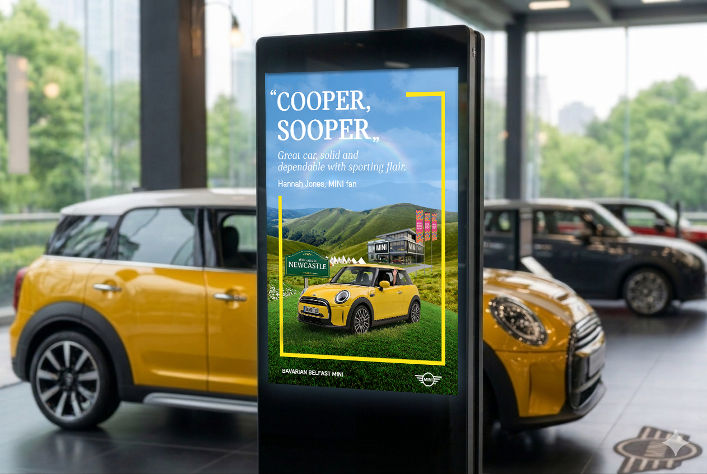
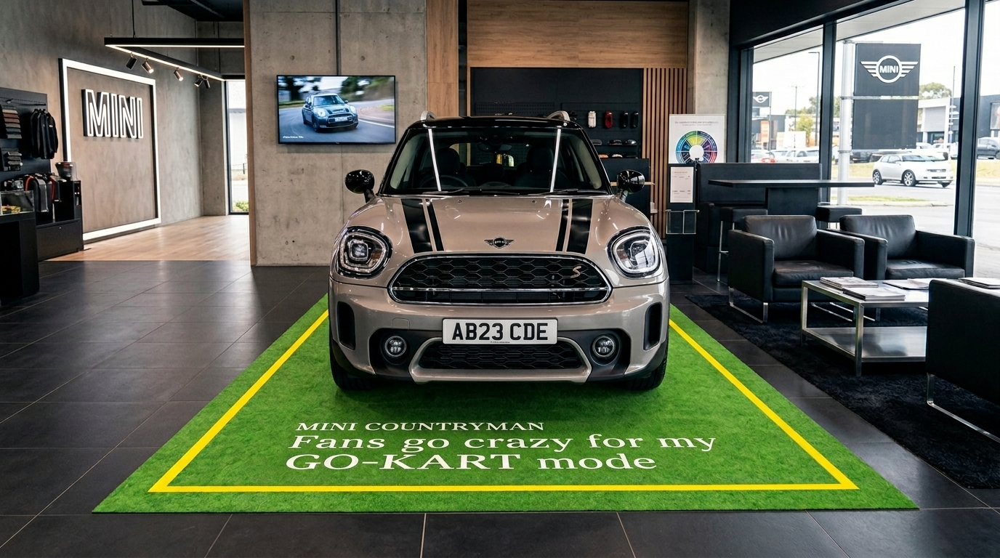
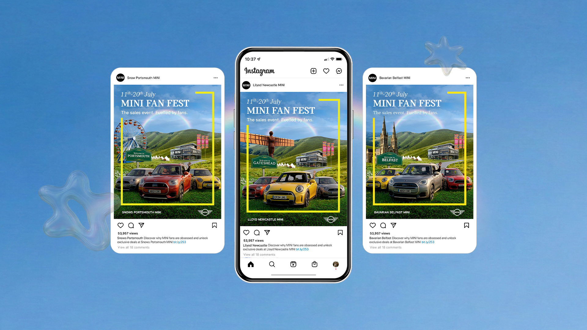
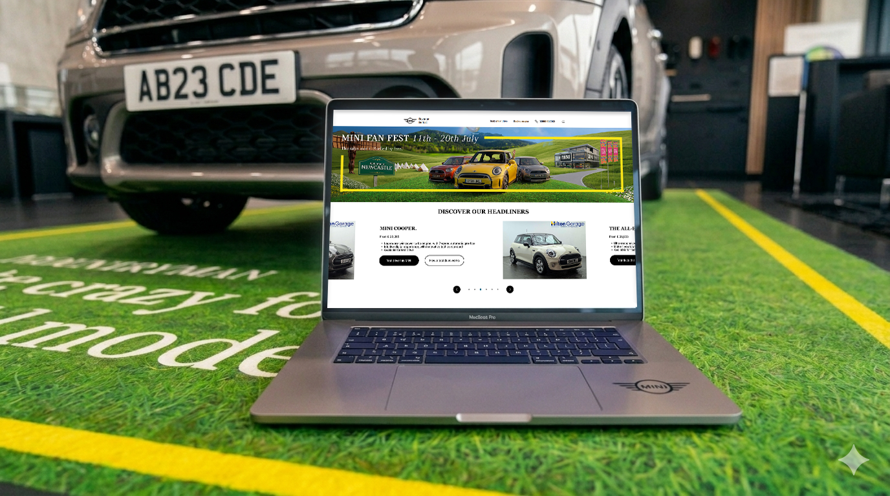

BMW Mini
A campaign that turns online excitement into real-world action. I helped developing the key visual and a flexible system that carried MINI's Fan Fest from social all the way to the dealership.

This project centred on MINI's Fan Fest campaign, with a clear goal: turn online excitement into real-world action.
The idea was to guide people from discovering the event through social and digital channels, all the way to visiting a dealership and booking a test drive with a MINI model.
From hype to a test drive.
The main challenge wasn't just driving awareness of the Fan Fest, but actually motivating people to take the next step: visiting a retailer and booking a test drive. We needed a strong connection between the excitement of the event and that practical action, so the transition felt natural rather than forced.
At the same time, the experience had to stay consistent across many touchpoints, from social content to in-store materials, without losing momentum, and still flex for each local retailer.

One key visual, built to scale.
From a design perspective, my role as an integrated designer was to focus on developing the key visual (KV) and building a system around it that could work across the entire journey.
Rather than one-off assets, we created a flexible visual approach that scales across social, CRM, microsites and in-store materials, while still feeling consistent and recognisable.

A toolkit, not static assets.
A big part of the work was making the system practical for dealerships. Assets needed to be easy to adapt locally, swapping in specific car models, locations or calls to action, without losing the campaign's overall look and feel.
That led to a toolkit-based approach, where everything was structured and reusable rather than static.
